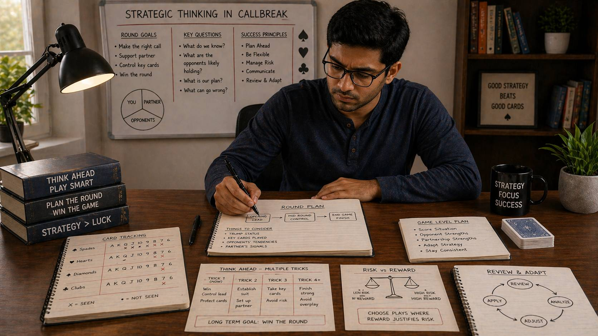

🪶 Introduction
Most Callbreak players think about the current trick. Good players think about the next few tricks. Great players think about the entire round — and beyond that, the entire game. Strategic thinking is the ability to see the bigger picture, plan multiple steps ahead, and make decisions that serve long-term goals rather than just immediate gains.
🖼️ Callbreak Strategic Thinking Overview

🎯 What Is Strategic Thinking?
Strategic thinking in Callbreak means making decisions with awareness of their broader consequences:
- How does this play affect my options in future tricks?
- What does this call set up for my partner?
- How does this round's outcome affect the game's trajectory?
- What am I trying to achieve beyond just winning this trick?
Strategic thinking separates reactive players from proactive ones. Reactive players respond to what happens. Proactive players shape what happens.
🔮 Thinking Beyond the Current Trick
The most common strategic mistake is treating every trick as an isolated event. In reality, each decision affects future decisions.
How Current Plays Shape Future Options
- Resource depletion: Playing a high trump now means one fewer trump later
- Position effects: Who wins the current trick determines who leads the next one
- Signaling effects: Your card choices communicate with your partner
- Opponent reads: Each play gives opponents information about your hand
The Sequence Not the Single Play
Instead of asking "What is the best play for this trick?", ask "What sequence of plays best serves my round goals?"
📅 Round-Level Planning
A round of Callbreak has 13 tricks. Planning across all 13 requires understanding how the round unfolds in phases.
Early Phase (Tricks 1-4)
The early phase is about establishing position, gathering information, and setting up strategies.
- Make accurate calls that set realistic goals
- Conserve strong resources for mid and late phase
- Lead in suits where you have strength without depleting too quickly
- Observe opponent and partner tendencies to update your reads
Middle Phase (Tricks 5-9)
The middle phase is where strategies are executed and adjusted.
- Execute the strategies established in the early phase
- Adjust based on new information gathered
- Support your partner's execution if they are pursuing a winning strategy
- Begin depleting resources that are no longer needed for future phases
Late Phase (Tricks 10-13)
The late phase is where rounds are decided and closeouts happen.
- Protect your call if you are close to fulfilling it
- Take calculated risks if you need to catch up
- Trust your earlier reads — the time for gathering new information has passed
- Execute cleanly without introducing unnecessary risk
🎯 Setting Strategic Goals Before the Round
Before the first trick, establish what you are trying to achieve. This guides all subsequent decisions.
Goal Categories
- Call Fulfillment: Structure your play to accomplish your call as reliably as possible
- Partner Support: Support their success rather than pursuing your own
- Disruption: Disrupting opponent strategy may be more valuable than pursuing your own
- Conservation: When ahead in score, playing to preserve your lead may be the goal
🃏 Playing the Situation, Not Just the Cards
Cards matter, but the situation matters equally. The same card can be played differently based on context.
Evaluating the Situation
- Who is winning the current round narrative, not just the trick count?
- What have opponents revealed about their hand strength?
- What does my partner need based on their call and play?
- How many tricks remain, and how does that affect urgency?
Adjusting Play Based on Situation
- In a comfortable lead position: Play to preserve, not expand. Minimize risk.
- In a catching-up position: Take calculated risks. Look for opportunities.
- In a support role: Your personal success matters less than enabling your partner's success.
👀 Anticipating Opponent Responses
Strategic thinking includes predicting how opponents will respond to your actions.
Building Predictive Models
Based on pattern recognition, develop predictions about opponent responses:
- If I lead this suit, how will each opponent likely respond?
- If I win this trick, what will they lead next?
- If I play passively now, how will they adjust?
When Predictions Fail
Even good predictions sometimes fail. When an opponent does something unexpected:
- Update your model immediately
- Do not persist with a strategy based on incorrect predictions
- Reassess the new situation and choose the best available response
- Update your opponent read to reflect the new information
🎭 Understanding Opponent Incentives
Strategic thinking means considering not just your goals but also what opponents are trying to achieve.
Opponent Goal Types
- Score Maximizers: Playing to win the most points possible in the current round
- Conservative Point Collectors: Playing to ensure they at least meet their call
- Disruptors: Prioritizing disrupting your strategy over their own point accumulation
- Desperate Catchers: Behind in score, taking unusual risks to close the gap
❓ FAQ
What is strategic thinking in Callbreak?
Strategic thinking means making decisions with awareness of their broader consequences, planning multiple steps ahead, and serving long-term goals rather than just immediate gains.
How do I plan across a round?
Divide the round into phases: early (tricks 1-4) for information gathering, middle (tricks 5-9) for execution, and late (tricks 10-13) for closeout. Adjust your strategy based on the phase.
How do I avoid becoming predictable?
Vary your lead suits, occasionally make non-obvious plays that still serve your goals, change your calling approach based on game state, and be aware of your rhythm.
When should I change my strategy?
Change strategy when opponent behavior reveals your initial read was incorrect, when your partner's strategy shifts, when the game state changes significantly, or when a key card appears that changes your resource balance.
🧾 Summary
Strategic thinking in Callbreak develops with attention and practice:
- Think in sequences, not single plays — how your current decision shapes future options
- Plan across round phases: early information gathering, mid-phase execution, late-phase closeout
- Set strategic goals before each round based on game state and team needs
- Read the situation, not just your cards — context determines the right play
- Anticipate opponent responses and prepare response sequences
- Understand opponent incentives to predict and counter their goals
- Vary your play deliberately to avoid becoming predictable
- Practice strategic patience — inaction is sometimes the best action
- Adapt strategy when conditions change rather than persisting with failed plans
- Balance short-term and long-term thinking to serve overall game success
Strategic thinking is a skill that develops over time. Every round offers an opportunity to practice and refine your approach.
🔥 SEO Keywords
callbreak strategic thinking, callbreak long term strategy, how to think ahead in callbreak, callbreak advanced planning, callbreak game strategy, callbreak thinking skills